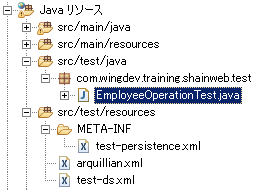

8. テストの実施¶
JUnit を用いた EJB (EmployeeOperation クラス) の単体テストを実施します。 単体テストは Arquillian を用いて行います。Arquillian は EJB を実際にアプリケーションサーバを実行してテストするフレームワークです。
8.1. フォルダとファイルの作成¶
- pgAdmin を用いて「shainwebtest」データベースを新規作成してください。
- 作成したデータベースの public スキーマ配下に テーブルの作成 で示したテーブルを新規作成します。
- src/test/java に「com.javadera.shainweb.test」パッケージを作成してください。
- 作成したパッケージ配下に「EmployeeOperationTest.java」を新規作成してください。
- src/test/resources に以下を新規作成してください。
- arquillian.xml
- test-ds.xml
- 「META-INF」フォルダ
- META-INF フォルダ内に test-persistence.xml
プロジェクト・エクスプローラーは以下のようになります。
8.2. ファイルの中身¶
- test-ds.xml
テスト用データベースに接続するための設定ファイルです。 以下のように中身を記述して保存してください。
<?xml version="1.0" encoding="UTF-8"?>
<!--
JBoss, Home of Professional Open Source
Copyright 2013, Red Hat, Inc. and/or its affiliates, and individual
contributors by the @authors tag. See the copyright.txt in the
distribution for a full listing of individual contributors.
Licensed under the Apache License, Version 2.0 (the "License");
you may not use this file except in compliance with the License.
You may obtain a copy of the License at
http://www.apache.org/licenses/LICENSE-2.0
Unless required by applicable law or agreed to in writing, software
distributed under the License is distributed on an "AS IS" BASIS,
WITHOUT WARRANTIES OR CONDITIONS OF ANY KIND, either express or implied.
See the License for the specific language governing permissions and
limitations under the License.
-->
<!-- This is an unmanaged datasource. It should be used for proofs of concept
or testing only. It uses H2, an in memory database that ships with JBoss
AS. -->
<datasources xmlns="http://www.jboss.org/ironjacamar/schema"
xmlns:xsi="http://www.w3.org/2001/XMLSchema-instance"
xsi:schemaLocation="http://www.jboss.org/ironjacamar/schema http://docs.jboss.org/ironjacamar/schema/datasources_1_0.xsd">
<!-- The datasource is bound into JNDI at this location. We reference
this in META-INF/test-persistence.xml -->
<datasource jndi-name="java:jboss/datasources/ShainwebDSTest"
pool-name="template-test" enabled="true"
use-java-context="true">
<connection-url>jdbc:postgresql://localhost:5432/shainwebtest</connection-url>
<driver>postgres</driver>
<security>
<user-name>postgres</user-name>
<password>pass#1234</password>
</security>
</datasource>
</datasources>
- arquillian.xml
Arquillian が使用する設定ファイルです。WildFly のインストールフォルダを指定します。
<?xml version="1.0" encoding="UTF-8"?>
<arquillian xmlns="http://jboss.org/schema/arquillian"
xmlns:xsi="http://www.w3.org/2001/XMLSchema-instance"
xsi:schemaLocation="http://jboss.org/schema/arquillian
http://jboss.org/schema/arquillian/arquillian_1_0.xsd">
<!-- Uncomment to have test archives exported to the file system for inspection -->
<!-- <engine> -->
<!-- <property name="deploymentExportPath">target/</property> -->
<!-- </engine> -->
<!-- Force the use of the Servlet 3.0 protocol with all containers, as it is the most mature -->
<defaultProtocol type="Servlet 3.0" />
<!-- Example configuration for a remote WildFly instance -->
<container qualifier="jboss" default="true">
<!-- By default, arquillian will use the JBOSS_HOME environment variable. Alternatively, the configuration below can be uncommented. -->
<configuration>
<property name="jbossHome">C:\tool\wildfly-9.0.2.Final</property>
</configuration>
</container>
</arquillian>
- test-persistence.xml
テスト用の persistence.xml です。
<?xml version="1.0" encoding="UTF-8"?>
<persistence version="2.1"
xmlns="http://xmlns.jcp.org/xml/ns/persistence" xmlns:xsi="http://www.w3.org/2001/XMLSchema-instance"
xsi:schemaLocation="
http://xmlns.jcp.org/xml/ns/persistence
http://xmlns.jcp.org/xml/ns/persistence/persistence_2_1.xsd">
<persistence-unit name="primary">
<!-- We use a different datasource for tests, so as to not overwrite
production data. This is an unmanaged data source, backed by H2, an in memory
database. Production applications should use a managed datasource. -->
<!-- The datasource is deployed as WEB-INF/test-ds.xml,
you can find it in the source at src/test/resources/test-ds.xml -->
<jta-data-source>java:jboss/datasources/ShainwebDSTest</jta-data-source>
<properties>
<property name="hibernate.show_sql" value="true" />
<property name="hibernate.dialect" value="org.hibernate.dialect.PostgreSQLDialect"/>
</properties>
</persistence-unit>
</persistence>
- EmployeeOperationTest.java
単体テストの実体です。
package com.javadera.shainweb.test;
import static org.junit.Assert.*;
import java.util.Date;
import java.util.List;
import java.util.logging.Logger;
import javax.inject.Inject;
import org.jboss.arquillian.container.test.api.Deployment;
import org.jboss.arquillian.junit.Arquillian;
import org.jboss.shrinkwrap.api.Archive;
import org.jboss.shrinkwrap.api.ShrinkWrap;
import org.jboss.shrinkwrap.api.asset.EmptyAsset;
import org.jboss.shrinkwrap.api.spec.WebArchive;
import org.junit.After;
import org.junit.Before;
import org.junit.Test;
import org.junit.runner.RunWith;
import com.javadera.shainweb.model.Employee;
import com.javadera.shainweb.model.RoleMaster;
import com.javadera.shainweb.service.AbstractOperation;
import com.javadera.shainweb.service.EmployeeOperation;
import com.javadera.shainweb.service.RoleMasterOperation;
import com.javadera.shainweb.util.Resources;
@RunWith(Arquillian.class)
public class EmployeeOperationTest {
@Deployment
public static Archive<?> createTestArchive() {
return ShrinkWrap.create(WebArchive.class, "test.war")
.addClasses(Employee.class, RoleMaster.class, AbstractOperation.class, EmployeeOperation.class, RoleMasterOperation.class, Resources.class)
.addAsResource("META-INF/test-persistence.xml", "META-INF/persistence.xml")
.addAsWebInfResource(EmptyAsset.INSTANCE, "beans.xml")
.addAsWebInfResource("test-ds.xml");
}
@Inject
EmployeeOperation employeeOperation;
@Inject
RoleMasterOperation roleMasterOperation;
@Inject
Logger log;
@Before
public void testBefore() {
prepareRoleMaster();
}
@After
public void testAfter() {
}
@Test
public void addEmployee() throws Exception {
Employee test = getTestEmployee();
employeeOperation.addEmployee(test);
test = employeeOperation.getEmployeeById("AC160099");
assertEquals(test.getShainId(), "AC160099");
}
@Test
public void removeEmployee() throws Exception {
Employee test = getTestEmployee();
test.setShainId("AF160100");
employeeOperation.addEmployee(test);
employeeOperation.removeEmployee(test);
test = employeeOperation.getEmployeeById("AF160100");
assertNull(test);
}
@Test
public void updateEmployee() {
Employee test = getTestEmployee();
test.setShainId("AF160199");
test.setEmail("test@shainweb.com");
employeeOperation.addEmployee(test);
// email の更新
test.setEmail("testupdate@shainweb.com");
employeeOperation.updateEmployee(test);
test = employeeOperation.getEmployeeById("AF160199");
assertEquals(test.getEmail(), "testupdate@shainweb.com");
employeeOperation.removeEmployee(test);
}
/**
* ロールマスタデータを挿入します。
*/
private void prepareRoleMaster() {
List<RoleMaster> list = roleMasterOperation.getAll();
if (list.size() == 0) {
RoleMaster rm = new RoleMaster();
rm.setRoleId(1);
rm.setRoleName("USER");
roleMasterOperation.addRoleMaster(rm);
rm.setRoleId(2);
rm.setRoleName("ADMIN");
roleMasterOperation.addRoleMaster(rm);
}
}
/**
* ロールマスタデータを削除します。
*/
private void destroyRoleMaster() {
RoleMaster rm = new RoleMaster();
rm.setRoleId(1);
rm.setRoleName("USER");
roleMasterOperation.removeRoleMaster(rm);
rm.setRoleId(2);
rm.setRoleName("ADMIN");
roleMasterOperation.removeRoleMaster(rm);
employeeOperation.removeEmployee(getTestEmployee());
}
/**
* テスト用データを取得します。
* @return
*/
private Employee getTestEmployee() {
Employee test = new Employee();
test.setAddress("試験住所");
test.setCellphoneNumber("09099998888");
test.setDeleteFlag(0);
test.setEmail("shiken0@shainweb.com");
test.setFamilyName("姓");
test.setFamilyNameKana("セイ");
test.setGivenName("名");
test.setGivenNameKana("メイ");
test.setJoinDate(new Date());
test.setPassword("test");
test.setPhoneNumber("0312341234");
test.setQuitDate(new Date());
test.setShainId("AC160099");
RoleMaster rm = new RoleMaster();
rm.setRoleId(1);
rm.setRoleName("USER");
test.setRoleMaster(rm);
return test;
}
}
{kind=link}
{kind=link}
{kind=link}
{kind=link}